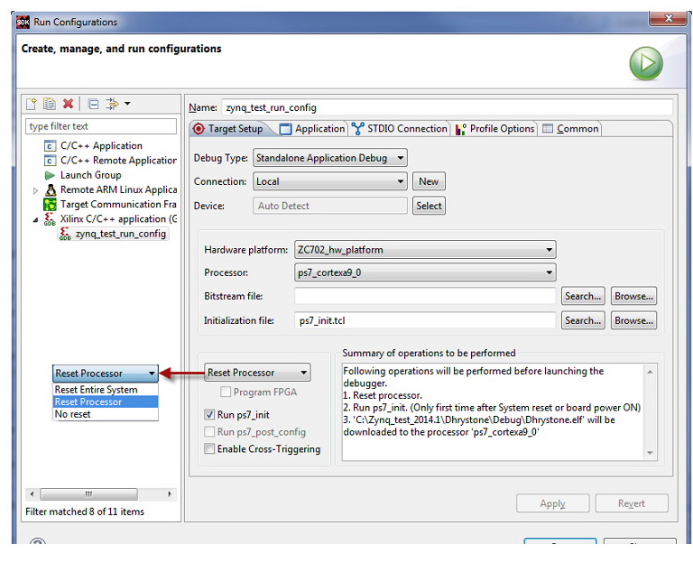

Target Setup Tab
First, provide an unique name for your configuration.
Next. in the Target Setup tab, set up the following details:
- Debug Type
- Connection: Local or Remote
Select Local for running the program on a target that is connected to local host
Create a remote connection by clicking New, and select the same for running the program on a target connected to the remote host.
- Device: This is automatically selected for you.
- Hardware Platform and Processor: Select the hardware platform and Processor for your design.
- Bitstream file and Initialization file: Search or browses to your Bitstream and Initialization files.
- Reset Processor - You can choose to reset the entire hardware system or the specific processor, or choose not to reset. Performing a reset ensures that there are no side effects from a previous debug session.
Reset Entire System: Perform a system reset if there is only one processor in the system.
Reset Processor: Perform a processor reset if there are multiple processors in the system. SDK downloads the ELF program to the memory before debugging.
